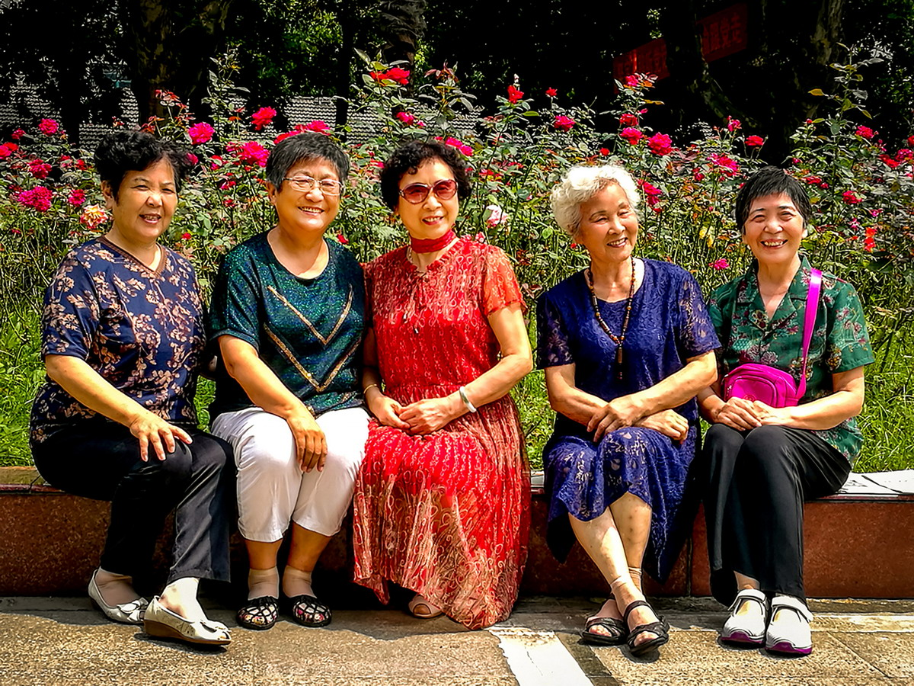

首页
摄影
歌唱
诵读
关于
校园里的红红绿绿与老老少少
作者： | 发布日期：2026-05-08
《校园里的一簇红色》
校园里的一簇红色，热烈，深沉。拍摄于2024年春季。
《校园里的一片绿荫》
校园里的一片绿荫，静谧，幽深。拍摄于2024年春季。》
《银龄坚守育人初心》

长期从事关工委特困生帮扶工作的五位老同志，在一次学期工作交流会后的合影。神态矍铄，热诚自信。摄于2021年7月
《幼儿园的“小蜜蜂”们》
拍摄于幼儿园一次欢乐庆祝六一的舞台演出。》